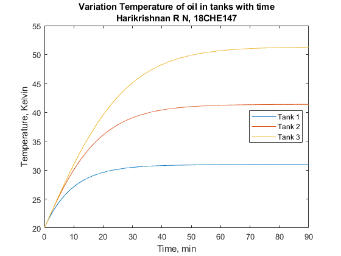

Question 6 Harikrishnan R N, 18CHE147
Here I have showed how to solve the 5th question given in the assignment
Here we need to solve system of ODEs simultenously.
Contents
Defining Constants and Arrays:
Here we will define all the constants required and the required arrays
Any changes needed to make in the values of constants can be made from here
W = 100 ; % kg/min, Mass flowrates in the tanks M = 1000; % kg, Mass of oil in each tank UA = 10 ; % kJ/min-degC , Product of Heat transfer coefficient and area of the coil % of the coil for each tank . Cp = 2; % kJ/kg, Heat capacity of oil n = 3 ; % Number of tanks n_steps = 1e4 ; % Number of time steps you want to solve for t_tot = 90; % User total amount of time over which equations % are being solved t_step = t_tot/n_steps; % Length of one time step Ts = 250+273.16; % Temperature of Incoming Steam T0 = (20+273.16) ; % Initial Temperature condition in each tank
Defining the Function used to solve ODEs :
Here I will define a function that returns the Array of ODEs that can be solved using an ODE solver
%T(1),T(2),T(3) stand for temperature in respective tanks dydt = @(t,T,~) [ ((W*Cp*(T0-T(1)))+(UA*(Ts-T(1))))/(M*Cp); % First tank ((W*Cp*(T(1)-T(2)))+(UA*(Ts-T(2))))/(M*Cp); % Second tank ((W*Cp*(T(2)-T(3)))+(UA*(Ts-T(3))))/(M*Cp);]; % Third tank
Solving the ODEs :
Here I will show how to solve the ODEs using the ode15s solver and how to plot the graphs
T_in = T0*ones(n,1) ; tspan = linspace(0,t_tot,n_steps); % To use in ode45 solver %t_span = [0 90] ; % If u want to use ode15s solver [t,T] = ode45(@(t,T) dydt(t,T),tspan,T_in) ; %[t,T] = ode15s(@(t,T) dydt(t,T),t_span,T_in) ; figure plot(t,T-273.16) title({'Variation Temperature of oil in tanks with time';'Harikrishnan R N, 18CHE147'}); xlabel('Time, min'); ylabel('Temperature, Kelvin') legend('Tank 1','Tank 2','Tank 3','Location','best')
Analysing the data :
Here I will show how I extracted the required temperatures and time.
%Solving for finding the steady state Temperatures; Fs = @(T,~) [ ((W*Cp*(T0-T(1)))+(UA*(Ts-T(1))))/(M*Cp); % First tank ((W*Cp*(T(1)-T(2)))+(UA*(Ts-T(2))))/(M*Cp); % Second tank ((W*Cp*(T(2)-T(3)))+(UA*(Ts-T(3))))/(M*Cp);]; % Third tank T_0 = [30+273.16 ; 40+273.16 ; 50+273.16]; T_sol = fsolve(Fs,T_0); T1 = T_sol(1) ; T2 = T_sol(2); T3 = T_sol(3); Ts = [T1;T2;T3]; T3s = (99/100)*T3 ; i = 1 ; while ( 0.99*(T3-273.16) > (T(i,3)-273.16)) i = i + 1; end disp('The steady state temperatures are : ') Tab = table([1:1:n]',Ts-273.16,'VariableNames',{'Tank number','Steady State Temperature, degC'}); disp(Tab) disp(['Time required to acheive 99% of the Steady State Temperature in Tank 3 = ',num2str(t(i,1)),' minutes'])
Equation solved.
fsolve completed because the vector of function values is near zero
as measured by the value of the function tolerance, and
the problem appears regular as measured by the gradient.
The steady state temperatures are :
Tank number Steady State Temperature, degC
___________ ______________________________
1 30.952
2 41.383
3 51.317
Time required to acheive 99% of the Steady State Temperature in Tank 3 = 63.0153 minutes